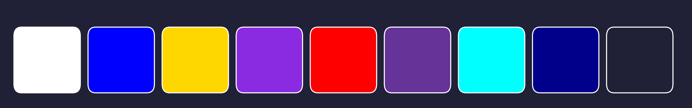

This website tells the story of my journey in computing. It is made up of four pages that share a little about me and my experiences, supported by a stylesheet to improve the look and feel, and images to make the stories more engaging. Here is a diagram that shows how my website is structured:
The table below gives a clearer overview of my website and explains the purpose of each page:
| Page Title | File Name | Main Content | Purpose |
|---|---|---|---|
| Home Page | index.html | Welcome text and a short intro of myself | Give reader a little information about me |
| My Past | past.html | Some stories from my life and early experiences with computing | Share my past experience and inspire readers |
| My Future | future.html | My plans and aspirations | Outline my goals and my aspiration to contribute |
| My Comments | comments.html | Details and Structure of my website | Help the readers understand the structure and purposes of different webpage |
NOTE: Each page has a navigation bar to every other page. The page also has the "Previous" and "Next" button to navigate to the previous and next page respectively.
The body contains the visible parts for the readers, which are Header, Navigation Menu, Content and Footer
The photo on the right illustrates the body structure of my web pages. At the top is the header, which contains the UTS logo on the left corner, the page title in the center, and a navigation bar on the right that allows users to move between different pages. Below the header is the content section, which holds the main information and purpose of each webpage. The bottom section is the footer, which in this case is used to indicate that these web pages were created for the subject Web Systems at the University of Technology Sydney.
The table below describes the CSS styles used for the web pages:
| Selector | Type | Purpose | Page |
|---|---|---|---|
| * | Universal selector | Target all elements on the page, remove the default outer and inner spacing | All pages |
| body | Element selector | Ensure the body covers the entire screen | All pages |
| header | Element selector | Style the header section with a gradient background, white text, fixed height, and a flexbox layout so its content is spaced evenly and centered | All pages |
| p | Element selector | Set the line height and font size | All pages |
| header h1 | Descendant selector | Style the h1 inside the header by giving it a responsive width (clamp), setting font, size and the position of its content | All pages |
| nav | Element selector | Keep the navigation bar positioned at the top of the page | All pages |
| nav ul | Descendant selector | Remove default list styling, use flexbox to align list items to the right with spacing, and allow wrapping for responsiveness | All pages |
| nav li a | Descendant selector | Style the navigation links to look like button with white text, no underline, padding, rounded borders, background color, and a clean readable font | All pages |
| .currentbutton | Class selector | Highlight the button of the page the user is reading | All pages |
| a:hover | Pseudo-class selector | Change the appearance of links on hover, giving them a new background, text color, and border color | All pages |
| h1, h2, h3 | Element selector | Adjust the size and color of some headings to make they look comfortable | All pages |
| .homecontent | Class selector | Style the main content area with a dark background, full viewport height, and balanced padding on all sides for spacing | All pages |
| .container | Class selector | Create a flexbox container where items (images and text container) are spaced evenly, aligned centrally, with gaps and bottom margin | Home, Past, Comments |
| .container1 | Class selector | Create a flexbox container where items (images and text container) are spaced evenly, aligned centrally, with bigger gaps | Comments |
| .textcontainer, .textcontainer1 | Class selector | Style textbox with color, font and padding | All pages |
| #utslogo, #portrait, #webicon, #footballimg, etc | Id selector | Style the images | All pages |
| .nextprevious | Class selector | Create a flex container for navigation buttons, aligning them to opposite sides with spacing at the top and no background | All pages |
| table, td, tr | Grouping selector | Style tables and their cells with aqua-colored borders, white text, padding, and collapsed borders for a clean look | Past, Comments |
| .gridcontainer | Class selector | Create a CSS grid layout with 2 columns and 2 rows, fixed sizes, gaps between items, and a maximum width | Future |
| .note | Class selector | Highlight important notes by making the text red, bold, and larger | Comments |
| footer | Element selector | Style the footer with a horizontal gradient background, padding for spacing, centered light text, and fixed height | All pages |
Description of the internal structure of my CSS file: I use CSS to control both the global layout and individual elements in my web pages. The CSS file uses a mix of universal selector, element selectors, class selectors, Id selectors, descendant selectors, grouping selectors and a pseudo-class selector.
In this website, I use a combination of flexbox (.textcontainer, .nextprevious) and grid (.gridcontainer) to create a structured layout:
Overall, using the combination of flexbox and grid creates a clean, balanced and responsive layout that makes the website easy to navigate and visually engaging.
These are the colors I used for this website:
I have chosen Rajdhani and Roboto fonts for this website.
The pairing of Rajdhani and Roboto creates a clear hierarchy: Rajdhani for standout titles/menus and Roboto for smooth reading in paragraphs.
I chose this style because I like a design that feels organized yet mysterious, which is why I used a dark colour palette as the base. The deep tones create intrigue, while bright accents and hover effects highlight key elements. Using flexbox and grid keeps everything structured and neat, reflecting my preference for clarity within a dark, elegant theme.
The <alt> tag is used to show the content of images in my website. Also, with the <alt> tag, screen reader can describe the images to visually impaired users. Moreover, search engines also use the <alt> tag to improve the website's discoverability. All meaningful images have a descriptive <alt> tag. When users hover mouse over the images, the image title will appear.
Body text uses Roboto at comfortable sizes and line height on a dark background. I chose Roboto because it is a modern, san-serif font that is readerable for digital screens. Its clean lines and balanced letterforms make it easy to read at both small and large sizes, which supports accessibility for all users. The font size is set large enough so that text remains readable even from a distance of about one metre. Color choices meet contrast needs. Important information is not conveyed only by color, but also borders.
My website is designed to be user-friendly for disabled users by following several accessibility practices. It includes the "lang" and the <meta charset="UTF-8"> declaration to support disabled users by improving how assistive technologies interpret the website. The "lang" attribute allows screen readers to use the correct pronunciation and voice settings, ensuring that blind or low-vision users can clearly understand the content. Meanwhile, the UTF-8 character encoding prevents text from breaking or displaying incorrectly, which helps users with cognitive or reading difficulties follow the content without confusion. The color scheme of my website is also friendly for color-blind users. I avoid relying on red and green contrasts, which are difficult for many users to distinguish, and instead use high-contrast combinations such as blueviolet, cyan, white and gold for the elements, which ensures that people with color-vision deficiencies can still use the website.
When CSS is turned off, the web pages fall back to the HTML structure:
Without the CSS file, the website remains functional because the semantic HTML ensures that the structure is preserved.
The site also supports keyboard navigation by making use of the tabindex attribute. For that reason, users who cannot use mouse can use the tab key to move between the links in the navigation menu and click enter to move to that page. The tab order highlights the focused element, making it clear which link is selected. This feature allows users who do not use mouse to access the website.
The website is designed to be responsive so that users can view it comfortably on both desktop computers and mobile phones. The layout uses flexible CSS grid and flexbox properties that adjust the size and arrangement of elements depending on the screen width. When viewed on a mobile phone, the layout adjusts automatically: the title remains fixed at the top right to highlight the current page, while the navigation bar wraps down onto the next line. This makes the design easier to use on smaller screens, ensuring that the navigation buttons remain visible without overlapping the title. By allowing the elements to wrap and reposition themselves, the site provides a layout that feels organized and user-friendly on mobile phone screen.
Each page of the website includes Next and Previous buttons at the bottom. These buttons give users a clear and consistent way to move through the site in sequence, without always needing to return to the navigation bar. These buttons can also be used by the Tab key. Moreover, those Next/Previous buttons also support a linear reading path, which is extremely useful for the website. These buttons also use the Roboto font to look synchronized with the navigation menu.